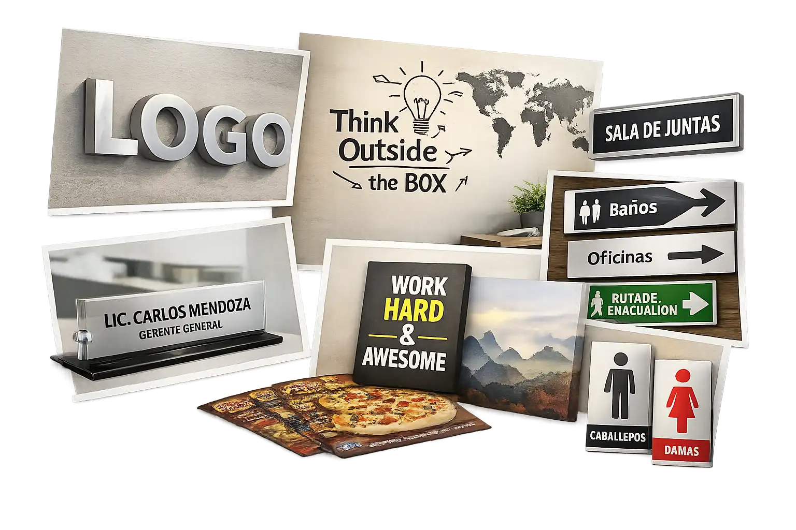

Para tu oficina
Diseñamos e imprimimos soluciones que hacen de tu oficina un espacio funcional y con identidad. Desde señalización, vinil decorativo, cuadros y letreros, hasta papelería y materiales personalizados que refuerzan la imagen de tu empresa y crean un ambiente profesional.